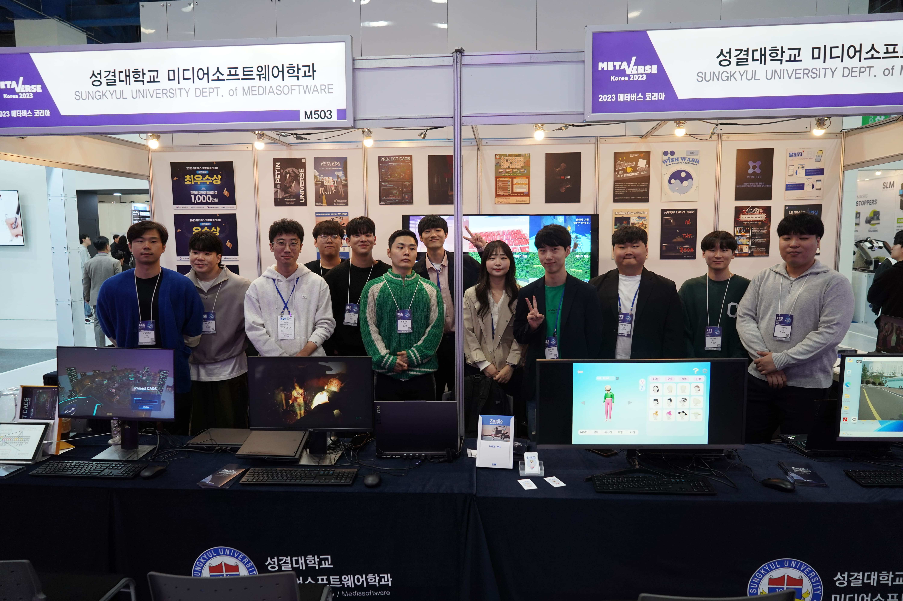
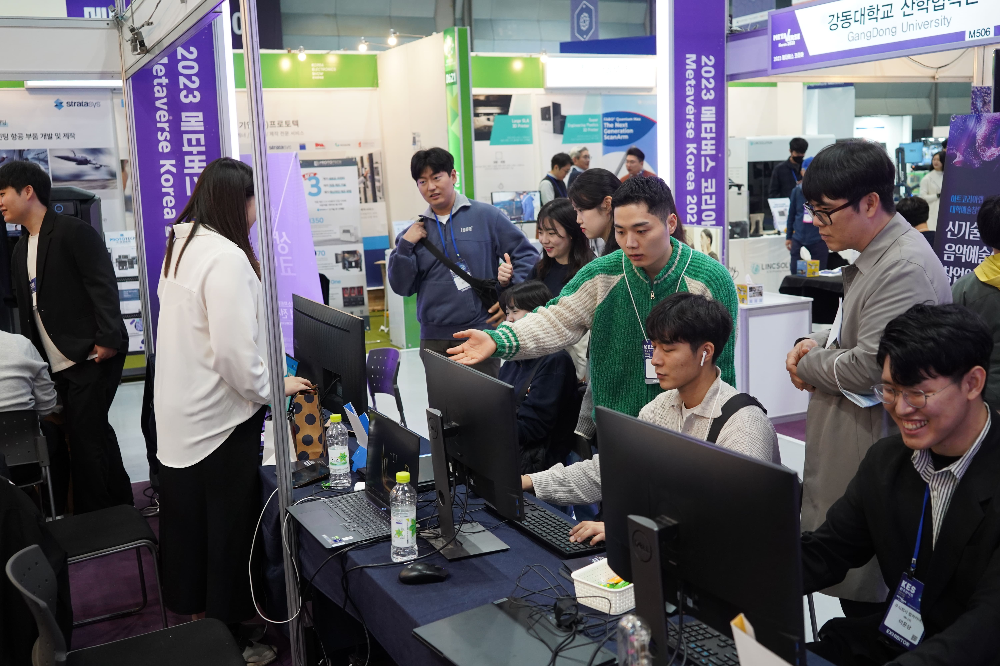
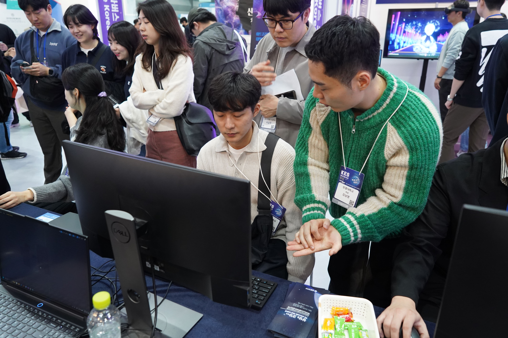

DarkAndLight

프로젝트 개요
스팀 출시 / KCI 논문1인칭 고프로캠 FPS 공포 로그라이크. 좀비를 죽이며 미로형 벙커를 탈출. 플래시 라이트 배터리 관리 + 퍼즐 + 발전기 가동으로 게이트를 열어가는 방식. 스팀 $3.9 출시.
202x년, 알 수 없는 좀비 바이러스가 전 세계를 휩쓸고 문명이 멸망합니다. 플레이어는 살아남은 도굴꾼으로서, 벙커 깊은 곳에 남겨진 물자를 찾아 어둠 속으로 들어갑니다.

유튜버 플레이 영상

주요 업무
팀장 / 전반 개발몬스터 스폰~절단~사망, 플레이어 스왑/HP/카메라/무기(Shotgun, Axe), 몬스터 AI(이동/추적/공격), 점프 스케어, 오브젝트 상호작용(문/발전기/아이템), 최적화(프로파일링/LOD/그림자 제거), SVN 버전관리, 스팀 출시 서류.
팀장 역할로 기획 방향성 설정, 코드 리뷰, 일정 조율, 개발 규약 수립을 담당했습니다. 지원 사업 문서 작성(한이음 ICT 150만원 + 안양 청년 100만원)도 직접 수행했습니다.
코엑스 전시
2023.10.25서울 삼성역 코엑스에서 성결대 학우들과 프로젝트 전시. 데모 버전 플레이 제공, 사용자 피드백 수집.



같은 팀원끼리 테스트할 때 생각 못한 부분, 놓친 부분, 필요한 부분이 많이 발견되었습니다. 사용자는 개발자 의도대로 플레이하지 않는다는 점을 크게 깨달았습니다.
배운 점
회고기획의 중요성 — 기획이 구체적이고 치밀하지 않으면 불필요한 기능과 레벨이 생기고, 팀원 간 충돌이 발생합니다. 초반에 확실한 기획을 잡는 것이 개발 속도보다 중요했습니다.
팀장의 역할 — 개발 외에도 문서 작성, 의견 조율, 일감 분배, 팀 사기 관리까지 신경 써야 했습니다. 코드만 잘 짜서는 프로젝트가 완성되지 않는다는 것을 체감했습니다.
최적화 — "나중에 하자"며 미뤘더니 중반에 10~15fps까지 떨어졌습니다. 프로파일링으로 Hits 원인을 분석하고, LOD 낮추기와 그림자 제거를 적용하여 60fps로 복구했습니다.
출시 경험 — 스팀 서류, 영문 주소, 은행 정보 작성이 까다로웠습니다. 포트폴리오로만 만들었으면 겪지 못했을 QA, 버그 수정, 연출, 최적화 과정을 실제로 경험했습니다.
외부 도움 — 패키징 이슈를 2주간 해결하지 못하다가, 인강 강사님에게 구글 드라이브로 프로젝트를 전달하여 해결했습니다. 혼자 끙끙대는 것보다 적극적으로 도움을 구하는 것이 효율적이었습니다.